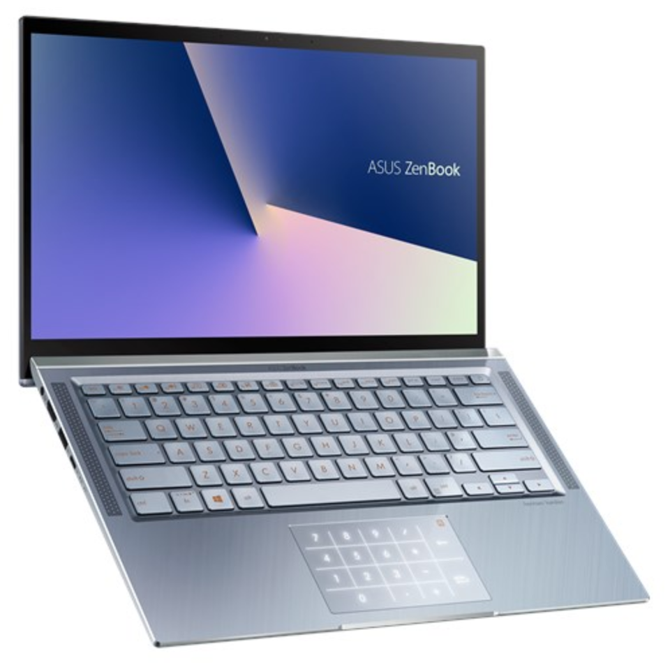
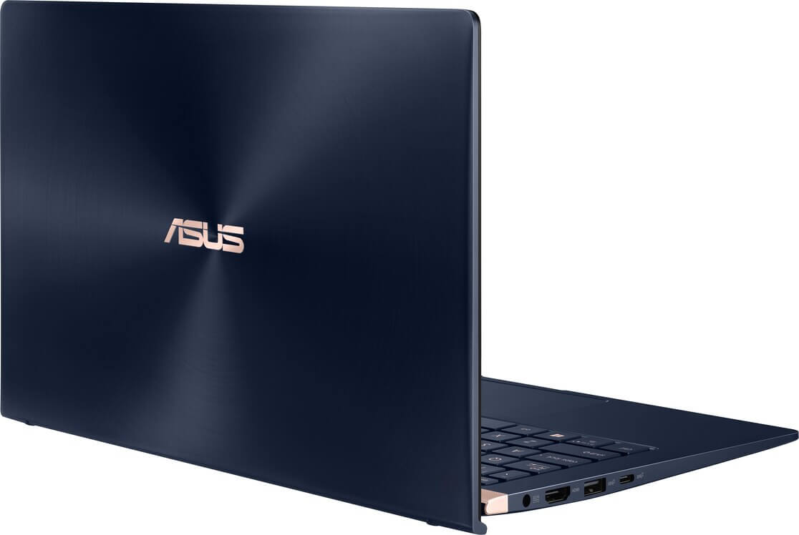
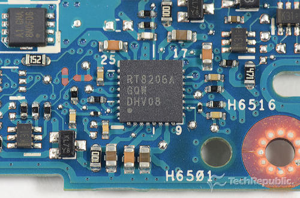
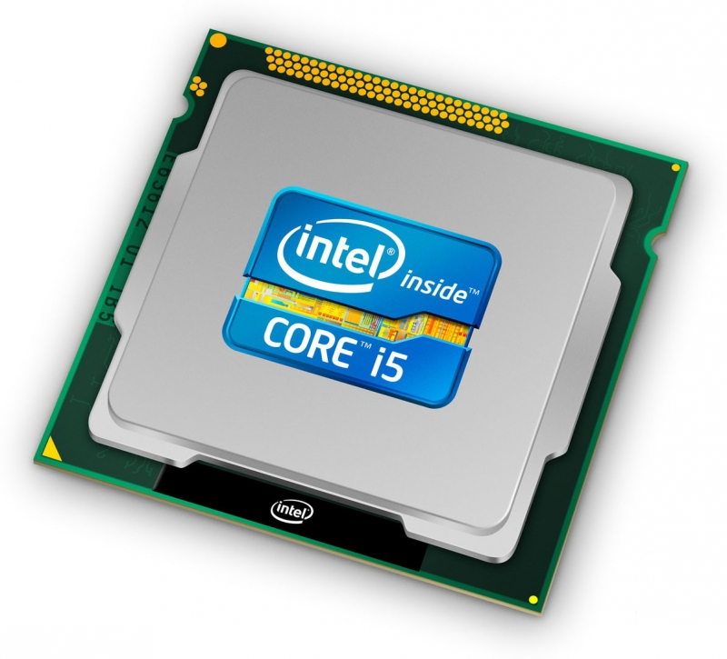
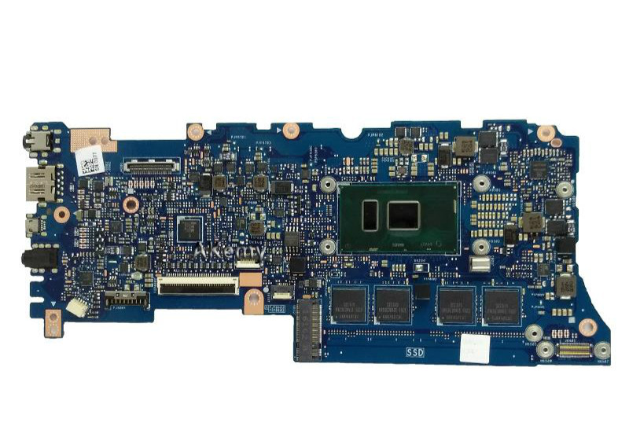
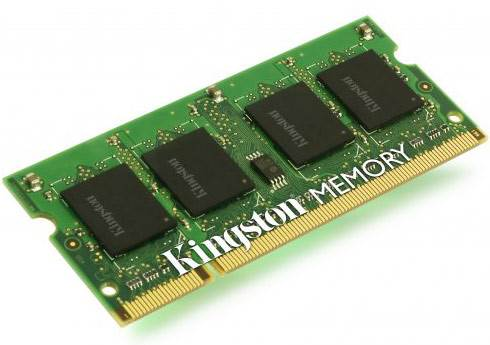
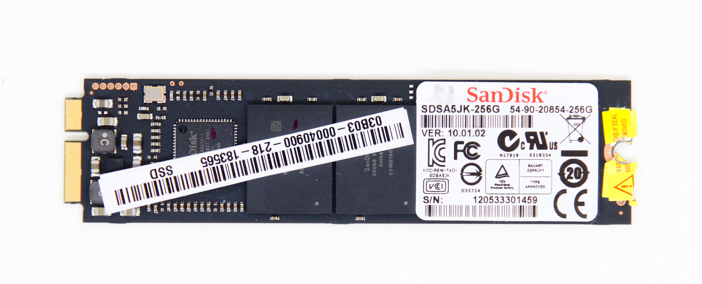
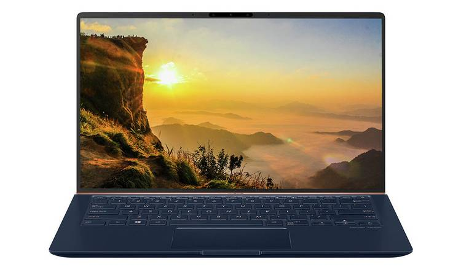
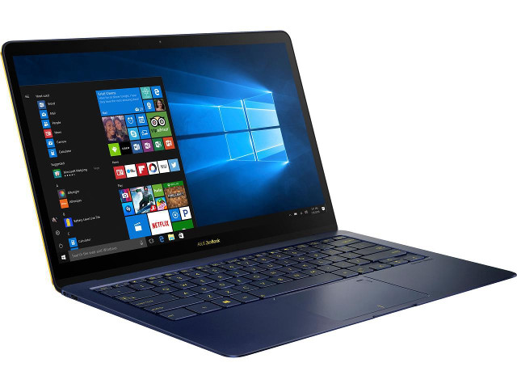

VanshPC.
VanshPC.
The State-of-the-Art Zenbook offers some of
the best components available for a cost-effective price.
Laptop shells are the outside esthetic and mesh that holds all the inner components together. A necessity for any laptop or PC to function effectively and nicely. It helps with heat deprivation and longevity of the laptop in general.
The Asus shell has a patented exterior chrome finish that allows for a cool effect at a glance. People will admire the style that you bring to the table and your computer will stand out from the crowd. The strong and durable exterior ensures that your computer components are always safe and ready to work. Asus has manufactured one of the best laptop shells out there.
The power supply dictates and allows for the use of the internal components of the computer. Every part needs energy and it all comes from the power supply. It is connected to the outer adapter that gets power from plugs. Various power supplies indicates the efficiency of the power supply.
The Asus Zenbook has a 45 watt power supply that ensures that you will be able to run your computer anywhere. Essentially able to connect to any adapter, this power supply is industry standard in power supplies. Thoroughly comptabilite and made for you.
The CPU or Central Processing Unit is responsible for all the calculations that happens on the computer and dictate all the processes that happen on the computer. It is essentially responsible for the computer's main functions. It dictates the functions and communications between different components to create a fast efficient system.
The Asus Zenbook uses the intel i5 processor with dual cores that can handle up to 3.8 GHz which is substantial enough to handle any process.
The motherboard allows the communication between all the components and dictates everything, essentially creating the system. It is the brain of the computer system and allows the computer to have functionality and to be cohesive. It has many sockets and plugs to allows all the systems to be connected.
Asus Zenbook uses the Intel M 5y10c Motherboard which is used to handle all the processes between all components in the laptop. In cooperation with microsoft, the Zenbook is here to serve you the best motherboard possible for the best price.
The RAM holds and stores data in memory. It essentially allows for information to be quickly read and accessed. The higher the ram the more it can hold and the faster it tends to be.
The Asus Zenbook comes with a single 8gb DDR4 ram which allows for fast processes and insane memory. Pretty normal amount of ram for any computer but here to serve you a good computer.
The storage system holds all your files that you create and allows for mass storage. Storage system comes either in Hard Drives, HDs or Solid State Drives, SSDs. HDs usually hold more files however can be quite slow and SSDs are smaller but are much faster. SSDs are more usually preferred for PCs and laptops as people don’t usually have lots of files.
The Asus Zenbook comes with 256gb SSD or solid state drive. It is fast when accessing files and will last you enough space.
Display is how big the screen is and the resolution of the screen. Usually, the bigger the display, the better the quality. Must computers have a ratio of 16x9 resolution which is standard among all pc manufactures and what our society has come to like.
The display for the Zenbook is 3200 x 1800 and has a screen of 14 inches. It screen can handle all RGB channels for allowing sharp and contrasting colours on the screen. It offers a nice thin display that makes it portable and easy to transport.
Operating System is the graphical user interface the user sees to navigate their files and computer system. There are various operating systems out there that offer different modes of customizability. OS is what makes it easy for users to actually use the computer and is what the user sees the most.
The Asus Zenbook uses the industry standard, Windows 10 operating system. Windows 10 offers a sleek and easy-to-use graphical interface with most software being compatible with it. For it’s large use on the current market, lots of programs are tailored toward windows customers. This OS is perfect for anyone.